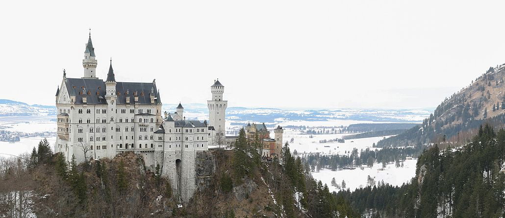
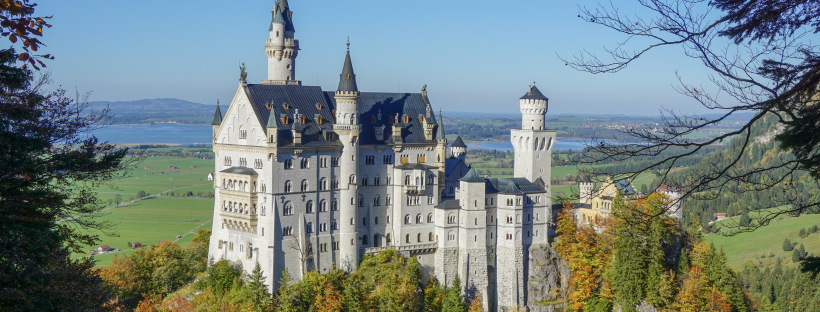
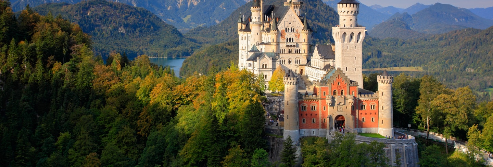
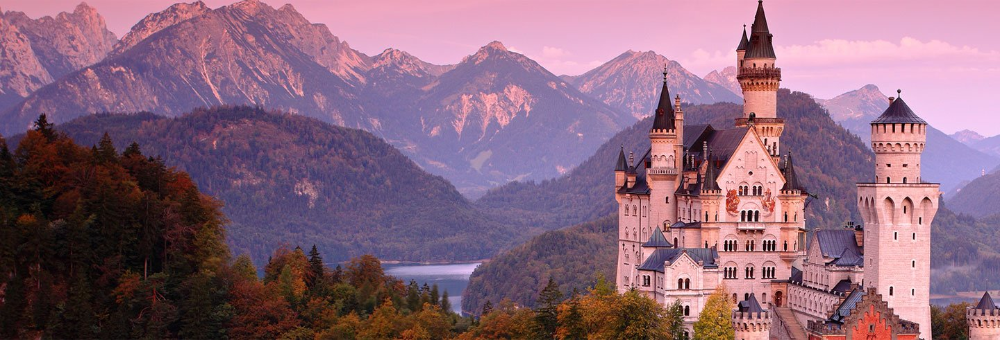

Está situado en el estado federado de Baviera cerca de Füssen (Alemania). Lo mandó construir el rey Luis II de Baviera en 1869. Su nombre original era Nuevo castillo de Hohenschwangau, en honor al castillo donde el rey pasó gran parte de su infancia.
|  |
|  | El castillo de Neuschwanstein se construyó en una época en que los castillos y las fortalezas ya no eran necesarios desde el punto de vista estratégico. Nació en la imaginación de Luis II como una pura fantasía romántica de un castillo medieval idealizado.
|
Combina eclécticamente varios estilos arquitectónicos y su interior alberga múltiples piezas de artesanía no menos fantásticas. Su diseño no es funcional, sino estético, siendo en buena medida el producto de la mente de un escenógrafo teatral.
|  |
Por dentro, además de continuas referencias a leyendas y personajes medievales como Tristán e Isolda o Fernando el Católico, contiene una completa red de luz eléctrica y el primer teléfono móvil de la historia
|  |